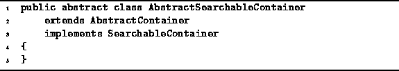

Data Structures and Algorithms
with Object-Oriented Design Patterns in Java
Data Structures and Algorithms
with Object-Oriented Design Patterns in Java
Program  introduces
an abstract class called AbstractSearchableContainer.
It is intended to be used as the base class from which
concrete searchable container realizations are derived.
As illustrated in Figure ,
the AbstractSearchableContainer class
extends the AbstractContainer class
(defined in Program )
and it implements the SearchableContainer interface
(defined in Program ).
introduces
an abstract class called AbstractSearchableContainer.
It is intended to be used as the base class from which
concrete searchable container realizations are derived.
As illustrated in Figure ,
the AbstractSearchableContainer class
extends the AbstractContainer class
(defined in Program )
and it implements the SearchableContainer interface
(defined in Program ).

Program: AbstractSearchableContainer class.
 Copyright © 1998 by Bruno R. Preiss, P.Eng. All rights reserved.
Copyright © 1998 by Bruno R. Preiss, P.Eng. All rights reserved.